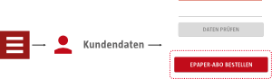
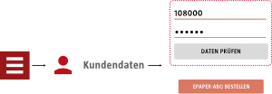
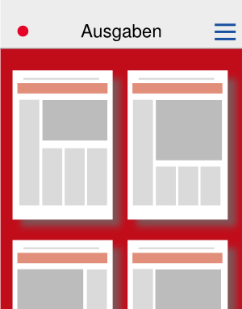

ePaper abonnieren oder testen
Testen Sie das ePaper 14 Tage lang kostenlos als Probeabo.
Oder werden Sie direkt Digitalleser*in und bestellen Sie ein ePaper-Abo auf taz.de. Hier gibt es auch alle wichtigen Informationen zum ePaper und zu unseren Aboprämien.
Wenn Sie sich direkt für eines unserer Abo-Angebote entscheiden wollen, gehen Sie dafür über das Menü der App zum Bereich Kundendaten.
Mit dem Button „EPAPER-ABO BESTELLEN“ gelangen Sie zum Bestellformular.

Nach der Bestellung des (Probe-)Abos erhalten Sie in der Regel bis zum nächsten Werktag Ihre Abo-ID und Ihr Passwort per E-Mail.
Bei Fragen zur App: app@taz.de
Kontakt zur Abo-Abteilung: digiabo@taz.de
schließenMit Abo-ID und Passwort anmelden
Wenn Sie ein Abo abgeschlossen haben oder bereits ePaper-Abonnent*in sind, gehen Sie bitte über das Menü der App zum Bereich „Kundendaten“ und geben Sie dort Ihre Abo-ID und Ihr Passwort ein.

Tippen Sie auf „Daten prüfen“, um die Anmeldung abzuschließen. Nach der erfolgreichen Anmeldung können Sie die aktuellen taz-Ausgaben herunterladen und lesen.
Kontakt zur Abo-Abteilung: digiabo@taz.de
schließenDas Menü der App aufrufen
In der Startansicht der App gelangen Sie zum Menü. Um es aufzurufen, können Sie es entweder vom linken Bildschirmrand hereinschieben oder auf das Symbol tippen.
schließenDie App-Einstellungen anpassen
Zu den Einstellungen, mit denen Sie die App konfigurieren können, gelangen Sie über das Menü.
Folgende Einstellungen können Sie vornehmen:
EPAPER-ABO
Nächste Ausgabe automatisch laden
Aktivieren Sie diese Funktion, wenn neue Ausgaben automatisch heruntergeladen werden sollen.
Hinweis: Wenn diese Funktion aktiviert ist, können Sie einstellen, dass die Ausgaben nur dann automatisch heruntergeladen werden, wenn Sie sich in einem WLAN befinden.
Nur über WIFI automatisch laden
Hier können Sie einstellen, dass neue Ausgaben nur dann automatisch heruntergeladen werden, wenn Sie sich in einem WLAN befinden.
Alte Ausgaben automatisch löschen
Aktivieren Sie diese Funktion, wenn ältere Ausgaben automatisch von Ihrem Gerät gelöscht werden sollen.
Hinweis: Wenn diese Funktion aktiviert ist, können Sie festlegen, wie viele Ausgaben Sie behalten wollen.
Bildschirm
Beim Lesen aktiv lassen
Wenn diese Funktion aktiviert ist, schaltet sich Ihr Bildschirm beim Lesen in der App nicht aus, auch wenn Sie den Bildschirm längere Zeit nicht berühren.
Ausrichtung
Wählen Sie Ihre gewünschte Bildschirmausrichtung: automatisch – Porträt (Hochformat) – Querformat.
Ansicht
Button für Inhaltsverzeichnis anzeigen
Aktivieren Sie hier den Button für die Anzeige des Inhaltsverzeichnisses, wenn Sie in der Seiten- und in der Artikelansicht das Inhaltsverzeichnis nicht vom linken Bildschirmrand hereinschieben können.
Button für Seitenübersicht anzeigen
Aktivieren Sie hier den Button für die Anzeige der Seitenübersicht, wenn Sie in der Seiten- und in der Artikelansicht die Seitenübersicht nicht vom rechten Bildschirmrand hereinschieben können.
Seitenansicht
Blättern durch einfaches Tippen am Bildschirmrand
Ist diese Einstellung aktiviert, können Sie durch die Seiten einer Ausgabe blättern, indem Sie in der Seitenansicht auf den linken bzw. rechten Bildschirmrand tippen.
Artikelansicht durch einfaches Tippen
Aktivieren Sie diese Einstellung, wenn Sie durch einfaches Antippen eines Artikels von der Seitenansicht in die Artikelansicht wechseln wollen.
Ist diese Funktion nicht aktiviert, gibt es keinen Wechsel in die Artikelansicht und Sie lesen die Artikel direkt auf der Seite.
Vergrößern durch doppeltes Tippen
Wenn diese Funktion aktiviert ist, können Sie in der Seitenansicht durch doppeltes Tippen in die Seite hineinzoomen.
Sie können stattdessen auch die Zoomgeste benutzen (zwei Finger auf dem Display spreizen bzw. zusammenführen).
Artikelansicht
Text vorlesen durch doppeltes Tippen
Wenn Sie in der Artikelansicht die Vorlesefunktion nutzen möchten, aktivieren Sie diese Einstellungen.
Push-Benachrichtigungen
Push-Benachrichtigungen erhalten
Aktivieren Sie diese Funktion, um Push-Benachrichtigungen der App zu erhalten.
Benachrichtigungston auswählen
Hier können Sie auswählen, welcher Ton abgespielt wird, wenn Sie eine Push-Nachricht erhalten.
Hinweis: Sie können die Benachrichtigungen auch auf stumm schalten. Dann bekommen Sie zwar die Push-Nachrichten, es wird jedoch kein Benachrichtigungston abgespielt.
Download-Benachrichtigung
Vibration
Hier können Sie einstellen, ob es ein kurzes Vibrationssignal geben soll, wenn der Download einer Ausgabe abgeschlossen ist.
Benachrichtigungston auswählen
Hier können Sie auswählen, welcher Ton abgespielt wird, wenn der Download einer Ausgabe abgeschlossen ist.
Hinweis: Sie können die Benachrichtigung auch auf stumm schalten. Dann wird nach dem erfolgreichen Download kein Benachrichtigungston abgespielt.
Sonstiges
Fehlerbericht automatisch senden
Ist diese Einstellung aktiviert, wird uns automatisch ein Fehlerbericht zugeschickt, wenn es in der App eine Fehlfunktion gegeben hat. Das hilft uns, Fehler aufzuspüren und zu beheben.
schließenDie drei verschiedenen Ansichten in der App
Ausgabenansicht
Die Ausgabenansicht ist die Startansicht der App. Hier finden Sie eine Übersicht aller verfügbaren und heruntergeladenen taz-Ausgaben.

Durch Tippen auf eine Ausgabe wechseln Sie zur Seitenansicht dieser Ausgabe.
Seitenansicht
Hier können Sie die Einzelseiten einer ausgewählten Ausgabe durchblättern und lesen.

Durch Tippen auf einen Artikel wechseln Sie zur Artikelansicht (wenn diese Funktion in den Einstellungen aktiviert ist).
Artikelansicht
In dieser Ansicht können Sie die Artikel einzeln lesen.

Ausgaben herunterladen, Ausgaben löschen (Ausgabenansicht)
Die einzelnen Ausgaben des ePapers können Sie in der Ausgabenansicht verwalten. Das ist die Startansicht der App. Dort sehen Sie alle heruntergeladenen und verfügbaren (blass dargestellten) Ausgaben.
| neue verfügbare Ausgaben anzeigen | von oben nach unten ziehen |
| ältere Ausgaben aus dem taz-Archiv anzeigen |  → Jahr und Monat auswählen → Jahr und Monat auswählen |
| Download einer Ausgabe starten | verfügbare Ausgabe antippen (Ansicht wechselt nach dem erfolgreichen Download direkt in die Seitenansicht) |
| Ausgabe(n) markieren |
➝ Ausgaben, die markiert werden sollen, antippen oder lang auf eine Ausgabe tippen, bis sie markiert ist, dann mit kurzem Tippen ggf. weitere Ausgaben markieren oder ➝ „Nicht geladene auswählen“/„Alle auswählen“ |
| Markierung(en) aufheben |
 antippen antippenoder markierte Ausgaben kurz einzeln antippen oder ➝ „Keine auswählen“ |
| Download mehrerer Ausgaben starten | Ausgaben markieren ➝ |
| Ausgabe(n) löschen | Ausgaben markieren ➝ |
| Einstellungen und Hilfetexte aufrufen |
1. antippen, um Menü zu öffnen oder Menü vom linken Rand hereinschieben 2. Einstellungen bzw. Hilfe aufrufen |
| in die Seitenansicht wechseln | heruntergeladene Ausgabe antippen |
Bitte beachten Sie: Wie lange der Download einer Ausgabe dauert, ist abhängig von Ihrer Internetverbindung.
schließenDurch eine Ausgabe blättern und einzelne Seiten lesen (Seitenansicht)
In der Seitenansicht können Sie durch eine Ausgabe blättern und die einzelnen Seiten lesen.
Um zur Seitenansicht zu gelangen, tippen Sie in der Ausgabenansicht auf die gewünschte Ausgabe.
| in der Ausgabe blättern | nach links und rechts wischen bzw. auf den linken und rechten Bildschirmrand tippen (wenn Einstellung aktiviert) |
| eine Seite vergrößern bzw. verkleinern (zoomen) | zwei Finger auf dem Display spreizen oder zusammenführen bzw. doppeltes Tippen auf die Seite (wenn Einstellung aktiviert) |
| Seitenübersicht dieser Ausgabe anzeigen |
oder vom rechten Bildschirmrand hereinschieben |
| Inhaltsverzeichnis anzeigen |
oder vom linken Bildrand hereinschieben |
| alle Artikel im Inhaltsverzeichnis anzeigen | ➝ |
| nur die Seiten im Inhaltsverzeichnis anzeigen | ➝ |
| Hilfetexte anzeigen | ➝ ➝ Hilfe |
| alle Artikel mit Lesezeichen anzeigen | |
| zurück zur Ausgabenansicht |
➝ oder mit dem Zurück-Button des Geräts |
| in die Artikelansicht wechseln | einen Artikel antippen |
Einzelne Artikel lesen (Artikelansicht)
In der Artikelansicht können Sie die Artikel einzeln lesen.
Um zur Artikelansicht zu gelangen, tippen Sie in der Seitenansicht auf den gewünschten Artikel, dann wird der Artikeltext angezeigt.
Hinweis: Die Artikelansicht können Sie in den Einstellungen deaktivieren.
Einstellungen für die Artikelansicht
Einstellungen aufrufen
➝
Normal – Sepia – Nacht
Wählen Sie zwischen den drei möglichen Textansichten durch Tippen auf das entsprechende Feld.
Horizontal scrollen
Aktiviert
Sie können durch einen Artikeltext blättern, indem sie nach links oder rechts wischen bzw. auf den linken oder rechten Bildschirmrand tippen.
Deaktiviert
Beim Lesen können Sie von oben nach unten durch den Artikel scrollen (wie auf einer Website).
Zum nächsten/vorherigen Artikel gelangen Sie durch Wischen nach links/rechts
Tippen am Rand
Bei aktivierter Funktion können Sie durch den Artikeltext blättern, indem Sie auf den rechten oder linken Bildschirmrand tippen.
Weiter scrollen
Ist diese Funktion aktiviert, können Sie am Ende eines Artikels direkt zum nächsten Artikel weiterscrollen.
Blocksatz
Ist diese Funktion aktiviert, wird der Text nicht im Flatter- sondern im Blocksatz angezeigt.
Spaltenbreite
Sie können festlegen, wie breit die Textspalten in der Artikelansicht sein sollen (wenn „Horizontal scrollen“ aktiviert ist).
Schriftgröße
Hier stellen Sie ein, in welcher Größe der Text in der Artikelansicht angezeigt werden soll.
| durch Artikeltext blättern ... | |
| ... wenn Horizontal scrollen aktiviert | nach links oder rechts wischen bzw. auf den rechten oder linken Rand tippen |
| ... wenn Horizontal scrollen deaktiviert | von oben nach unten scrollen (wie bei einer Website) |
| zum nächsten/vorigen Artikel wechseln ... | |
| ... wenn Horizontal scrollen aktiviert | nach oben bzw. unten wischen |
| ... wenn Horizontal scrollen deaktiviert | nach links oder rechts wischen |
| ... wenn Weiterscrollen aktiviert | am Ende eines Artikels einfach weiterscrollen |
| Lesezeichen für den ausgewählten Artikel setzen | |
| ein Lesezeichen wurde gesetzt | |
| Artikel teilen |
1. 2. aus Teilen-Optionen auswählen |
| Seitenübersicht dieser Ausgabe anzeigen |
oder vom rechten Bildschirmrand hereinschieben |
| Inhaltsverzeichnis anzeigen |
oder vom linken Bildrand hereinschieben |
| alle Artikel im Inhaltsverzeichnis anzeigen | ➝ |
| nur die Seiten im Inhaltsverzeichnis anzeigen | ➝ |
| Hilfetexte anzeigen | ➝ ➝ Hilfe |
| zurück zur Seitenansicht | mit dem Zurück-Button des Geräts |
Übersicht aller Symbole
| Menü aufrufen | |
 |
Einstellungen aufrufen |
| Hilfe aufrufen | |
| Optionen zum Herunterladen, Markieren, Löschen der Ausgaben anzeigen | |
| markierte Ausgabe(n) herunterladen | |
| Markierung(en) der Ausgabe(n) ändern | |
| markierte Ausgabe(n) löschen | |
| Seitenübersicht anzeigen | |
| alle Artikel im Inhaltsverzeichnis anzeigen | |
| nur die Seiten im Inhaltsverzeichnis anzeigen | |
| Einstellungen für die Artikelansicht öffnen | |
| zurück zur Ausgabenansicht | |
| Artikel teilen | |
| Lesezeichen setzen | Lesezeichen ist gesetzt |
| alle Artikel mit Lesezeichen anzeigen | |
|
ältere Ausgaben aus dem taz-Archiv anzeigen |
Datenschutzerklärung
Die Unternehmen der taz-Gruppe nehmen den Schutz personenbezogener Daten sehr ernst. Soweit anwendbar sind wir verpflichtet, die Vorgaben des Bundesdatenschutzgesetzes (BDSG) und des Telemediengesetzes (TMG) zu erfüllen. Wir haben technische und organisatorische Maßnahmen getroffen, die sicherstellen, dass die gesetzlichen Vorschriften zu personenbezogenen Daten eingehalten werden. Die nachfolgende Erklärung gilt für die taz.app und gibt Ihnen einen Überblick darüber, wie wir den Schutz personenbezogener Daten gewährleisten und welche Art von Daten zu welchem Zweck erhoben, verarbeitet und genutzt werden.
Über unsere App werden keine Analysen zum Verhalten einzelner Nutzer erstellt (Tracking, Targeting). Grundsätzlich speichern wir nur die personenbezogenen Daten, die für eine zuverlässige Funktion der App und zur Erkennung von Fehlern und deren Beseitigung unbedingt notwendig sind.
Im einzelnen sind das
Ihre Abo-ID und das zugehörige Passwort.
Bei jedem Download speichern wir Datum, Uhrzeit, App- Version, Art des Gerätes, Gerätetyp und eine anonyme InstallationId, die bei jeder Neunstallation der App generiert wird
Bei eingeschalteten Push-Nachrichten speichern wir zusätzlich das DeviceToken (eine vom Gerät generierte anonyme Adresse die mit der App verknüpft ist), um die Nachricht an Sie senden zu können, Betriebssystem (Android oder iOS), Version der App, ob Textnachrichten gewünscht sind oder nicht, und die Abo-Id wenn vorhanden.
Wir arbeiten mit Crashlytics/Google (“Crashlytics”), einem Dienst der im Zusammenhang mit Systemabstürzen und Fehlern Daten sammelt. Dabei werden Informationen zum Gerätetyp, Betriebssystemversion und einige technische Daten über das Mobilgerät an Crashlytics gesendet die helfen können, Fehler zu beheben. Diese Informationen enhalten weder die IP-Adresse noch andere personenbezogene Informationen und keine anderen Daten von dem Mobilgerät.
Crashlytics' Datenschutzrichtlinie kann hier eingesehen werden.
Fragen zum Datenschutz?
Bei Fragen bezüglich unserer Datenschutzbestimmungen können Sie gerne über die E-Mail Adresse datenschutz@taz.de Kontakt zu uns aufnehmen.
Stand Oktober 2017
schließen